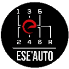

My Skills
Core Skills


Systèmes embarqués
Développement logiciel
Ingénierie logicielle & modélisation
Tests, validation & qualité
Cybersécurité & communication
Électronique & systèmes connectés
Intelligence Artificielle & Data
Gestion de projet & collaboration
Mécanique & Production industrielle
Compétences professionnelles et entreprises
Stage de recherche en systèmes embarqués
Université de Sherbrooke – Canada2025
Ingénieur apprenti Prototypage SW Châssis
Renault Group – France2024 – 2026

Projet de fin d’études (en cours)
Thales – France2025 – 2026

Projets d’ingénierie
ESEO – France2023 – 2024
Stagiaire en électronique & objets connectés
Digital-Tech – Bénin2021 – 2022
Stagiaire en fabrication mécanique et maintenance
Société De Brasserie – Bénin2020 – 2021

Stagiaire en fabrication mécanique sur machines-outils
Centre de perfectionnement des personnes d’entreprises – Bénin2019 – 2020

PDG et fondateur d’une marque en ligne
Ife Woman – France & International2025

Président de la Fondation Jeunesse Locale
ONG JPA – Bénin2020 – 2023
Principaux projets techniques et professionnels
Note : Certains projets réalisés en entreprise sont soumis à des clauses de confidentialité. Les informations présentées ici décrivent uniquement les aspects techniques généraux et les compétences mises en œuvre.
Prototypage logiciel embarqué – Renault Group (Entreprise)
Recherche industrielle menée au sein d’Ampere Software Technology pour le développement et la validation de logiciels de contrôle châssis dans un environnement ROS2 embarqué.
- Portage de logiciels temps réel vers ROS2 et génération de nœuds depuis MATLAB.
- Automatisation du déploiement logiciel via GitLab CI/CD.
- Conception d’une solution hybride dSPACE–ROS2 pour le prototypage rapide.
- Développement d’interfaces homme–machine (IHM) pour la supervision.
- Validation d’algorithmes embarqués sur véhicules prototypes.
Projet de fin d’études – Thales (Entreprise & École)
Projet collectif portant sur la conception d’architectures logicielles distribuées et le développement d’algorithmes de coordination multi-robots autonomes.
- Modélisation UML : diagrammes de séquence, d’objets et de classes.
- Programmation des modules en C++ et Python.
- Tests et validation des comportements autonomes sur simulateur.
- Intégration et communication inter-modules via protocoles ROS2.
Contrôle de bioreacteur – Université de Sherbrooke (Laboratoire)
Stage de recherche axé sur la conception d’un système de contrôle embarqué pour un bioréacteur de décellularisation automatisé.
- Développement d’une interface logicielle en Python pour le pilotage.
- Automatisation du système de perfusion et de décellularisation.
- Intégration de capteurs, pompes et valves contrôlées par microcontrôleur.
- Validation du système par essais en conditions réelles au laboratoire.
Projets d’ingénierie – ESEO (École)
Réalisation de projets intégrant électronique, développement logiciel et conception mécanique.
- Développement d’applications en C et Java pour systèmes embarqués.
- Réalisation de cartes électroniques sous Altium Designer.
- Conception et contrôle de véhicules Bluetooth télécommandés.
- Modélisation mécanique 3D de systèmes sur SolidWorks.
Objets connectés – Digital-Tech (Entreprise)
Conception de solutions électroniques embarquées pour dispositifs connectés et IoT industriels.
- Conception de cartes d’alimentation (à découpage et linéaires).
- Programmation de microcontrôleurs en C/C++.
- Communication via UART, SPI, I2C et CAN.
- Tests et validation des circuits électroniques.
Fabrication mécanique et maintenance – Société De Brasserie (Entreprise)
Projet industriel orienté sur la maintenance d’équipements et la production mécanique de pièces techniques.
- Usinage de pièces de rechange et assemblages métalliques.
- Maintenance préventive et corrective des machines.
- Lecture de plans, contrôle de conformité et soudure.
Mes principaux projets de recherche
Système automatisé de décellularisation – Université de Sherbrooke
Recherche appliquée sur le développement d’un système embarqué pour la décellularisation de tissus biologiques, intégrant le contrôle temps réel d’un bioréacteur.
- Conception d’une interface Python pour le pilotage du bioréacteur.
- Intégration et commande de capteurs, pompes et valves via microcontrôleurs.
- Optimisation du code embarqué pour la gestion en temps réel des cycles de perfusion.
- Validation expérimentale du système sur tissus biologiques.
Recherche sur l’architecture ROS2 pour le prototypage logiciel châssis – Ampere Software Technology
Étude industrielle sur l’optimisation d’une infrastructure ROS2 embarquée pour le prototypage rapide de logiciels de contrôle châssis sur plateformes NUC.
- Production et intégration manuelle des binaires ROS2 pour environnements embarqués.
- Génération et déploiement de nœuds ROS depuis MATLAB.
- Validation fonctionnelle de plusieurs modules de contrôle dans un véhicule prototype.
- Amélioration des performances et de la fiabilité du système ROS2 embarqué.
Agent IA embarqué pour l’analyse et la supervision des systèmes automobiles
Conception d’un agent d’intelligence artificielle embarqué capable de surveiller, diagnostiquer et interpréter les données issues de systèmes embarqués automobiles.
- Création d’une base de connaissances dédiée aux protocoles CAN, LIN et ROS2.
- Développement d’un moteur d’analyse contextuelle pour la détection d’anomalies.
- Implémentation d’un modèle Edge AI optimisé pour microcontrôleurs.
- Interface IHM de visualisation et supervision en temps réel.
Application de gestion et supervision de projets techniques
Développement d’une application multiplateforme pour la planification et le suivi de projets techniques, combinant modélisation UML et interface graphique en Python.
- Conception du backend en Python et du frontend avec PyQt/Tkinter.
- Définition UML et conception de la base de données du système.
- Automatisation de la génération de rapports (PDF, Excel).
- Outil de suivi, traçabilité et gestion de performance de projets.
Éducation
Diplôme d’ingénieur
Spécialisation en Logiciel Embarqué & Cybersécurité
Programme de recherche
Systèmes embarqués
Formation en gestion, marketing et développement entrepreneurial
Cours préparatoires aux écoles d’ingénieurs
Mathématiques et Physique (CPGE)
Qualités personnelles et leadership
Président – Fondation Jeunesse Locale
ONG JPA | 2018 – 2021
- Organisation d’événements communautaires et gestion d’équipes de bénévoles.
- Développement de compétences en communication, planification et prise de décision.
- Capacité à mobiliser et fédérer autour de projets collectifs à long terme.
- Esprit d’initiative et persévérance dans la conduite de projets sociaux.
Entraîneur – Club de football U12
FC Espoir | 2019 – 2021
- Encadrement et formation de jeunes joueurs dans un cadre sportif et éducatif.
- Créativité, adaptabilité et esprit d’équipe dans la gestion du groupe.
- Capacité à motiver et à travailler sous pression pour atteindre des objectifs communs.
- Développement de compétences en gestion du stress et communication interpersonnelle.
Vie associative
ESEO Angers | 2023 – 2026
- Membre du club Robot ESEO Angers
-  Membre du club automobile de l’ESEO (ESE’Auto)
- Membre du club de football de l’ESEO Angers
Centres d’intérêt
Contact
Development: Ce site web a été entièrement développé par mes soins à l'aide de technologies web modernes. Le code source complet est disponible sur mon GitHub. Si vous décidez d'utiliser ou de citer cet ouvrage, veuillez en indiquer la source. Merci !